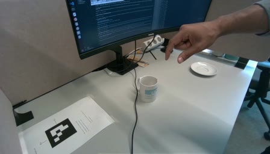

Summary
Motivation
- Robot demonstrations are slow and expensive to collect. Videos of a human hand doing the task are cheap: a camera and a few seconds per demonstration.
- A hand is not a robot, so the video cannot be replayed as robot actions directly. Something in between has to carry the intent of the motion from one body to the other.
Concept
- Can we drive a robot to solve a task in simulation, given just an image of the scene in the real world?
- Use a world model to plan how to solve the task by rolling out videos and generating the flow of key points. Then use the generated flow of key points to condition and drive a policy in simulation.
Personal Motivation
- Most of my PhD research has focused on reinforcement learning for locomotion, and more recently on typical VLA architectures for industrial tasks.
- I have had little opportunity to explore video world models or real2sim research.
- The same day I read about the internship challenge, my collaborator on my most recent work showed me the paper Hydra-0: Action Flow for Generalist World Modeling and Control.
- This challenge was a great opportunity to explore these technologies I had not worked with before, while using my experience with VLAs along the way.
- I have really enjoyed this past week of work.
Method
generated video + planned action flow
wrist camera obs
First frame

World action modelCosmos rolls out video + key-point flow
Policyflow-conditioned, 32 actions
Simulation
choose episode
Results
| flow | train (80) | test (20) | failed (46) |
|---|---|---|---|
| no flow: baseline, both cameras | 84.4 ± 1.6 | 77.8 ± 1.7 | 42.1 ± 1.6 |
| no flow: baseline, wrist camera | 59.1 ± 1.2 | 36.6 ± 2.9 | 24.9 ± 1.7 |
| no flow: baseline, no cam obs (state only) | 0.7 ± 0.4 | 0.2 ± 0.4 | 0.3 ± 0.3 |
| flow-conditioned, ground truth flow (E2E Policy, wrist cam obs) | 93.5 ± 0.4 | 73.0 ± 1.8 | 6.8 ± 0.4 |
| flow-conditioned, ground truth flow (E2E Policy, No cam obs) | 88.3 ± 1.0 | 62.2 ± 1.9 | 3.8 ± 0.4 |
| ours | 58.2 ± 2.9 | 27.8 ± 8.0 | 4.8 ± 0.9 |
| ours (no cam obs) | 59.2 ± 1.9 | 28.8 ± 5.7 | 2.6 ± 2.1 |